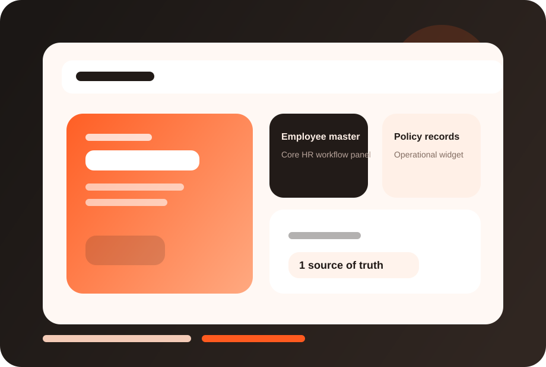

Operational clarity
Keep employee information current and accessible to the right people.
FuzionHR Core HR gives businesses one source of truth for employee records, organizational structure, documents and essential HR workflows.

This page now has a dedicated visual treatment, stronger readability, and screenshot-ready product areas so you can drop in actual FuzionHR UI captures later.
Clearer module identity and stronger visual recognition.
Dedicated screenshot frames for real product views.
Structure remains intact while the design feels richer.
Keep employee information current and accessible to the right people.
Ensure downstream payroll and policy workflows depend on clean master data.
Standardize people records before the business grows more complex.
These screenshot frames are placeholders for your actual product UI. Once you share real captures, we can place them here with polished annotations.
Replace this frame with your real product screenshot to show the live FuzionHR UI.
Use this area for dashboards, approvals, reports or employee-facing views.